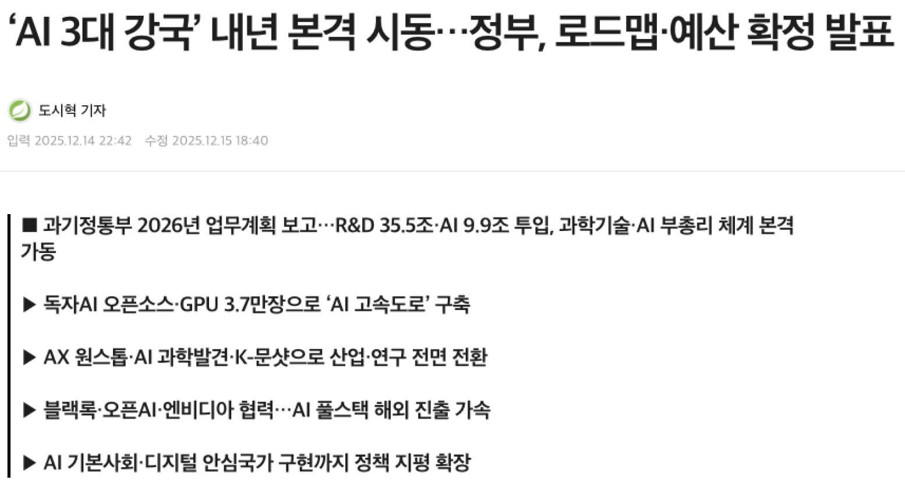
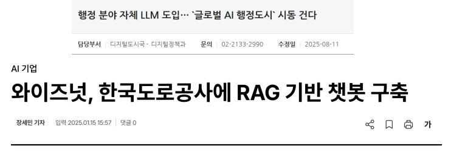
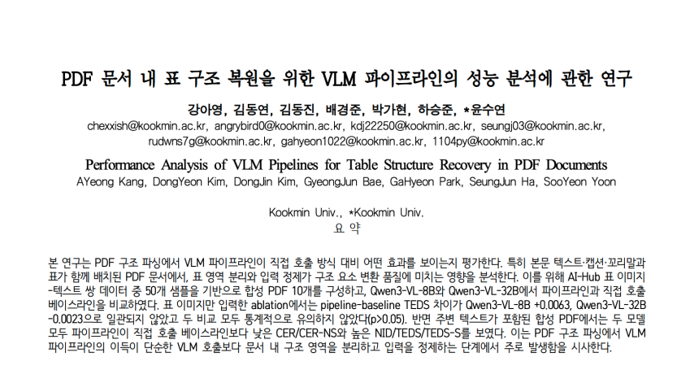
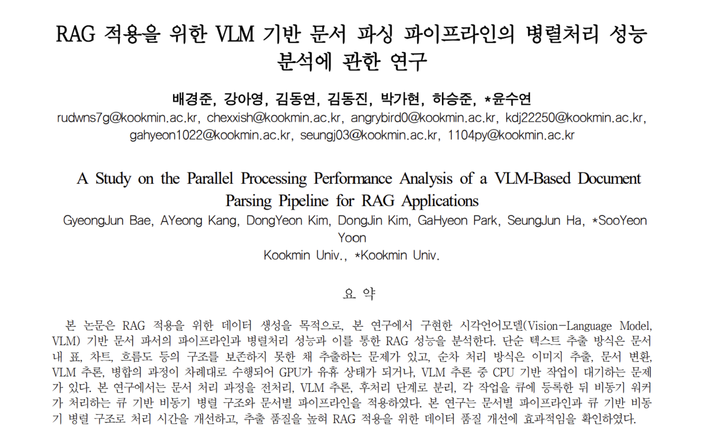

김동연 PM & Full Stack
프로젝트 일정 및 기능 기획
프론트엔드·백엔드 연동
전체 서비스 흐름 관리
@0yeonnnn0
LLMong은 문서를 AI 기반으로 구조화하여 RAG 검색 및 질의응답에 최적화된 데이터로 전환하는 문서 파싱 서비스입니다.
복잡한 업무 문서를 단순 파일이 아닌 검색 가능한 지식 데이터로 바꾸는 것을 목표로 합니다.
업로드된 문서의 텍스트, 표, 이미지, 메타데이터를 분석해 사용자가 문서 내용을 더 쉽게 찾고 질문할 수 있는 기반을 제공합니다.
LLM과 RAG를 업무 문서에 활용하려면 사내 문서를 단순 보관 파일이 아니라 검색 가능한 데이터로 정리하는 과정이 필요합니다.



하지만 실제 회사에서 사용하는 업무 문서는 HWP, PDF, 스캔 이미지, 표, 차트, 수식처럼 형식이 다양하고 레이아웃이 복잡해, 일반적인 텍스트 추출만으로는 RAG 검색에 바로 사용할 수 있는 데이터로 변환하기 어렵습니다. LLMong은 이러한 문서를 자동으로 구조화해 RAG 검색에 사용 가능한 데이터를 만들기 위해 개발되었습니다.
문서 파서는 HWP, PDF, 이미지처럼 서로 다른 형식의 문서에서 텍스트, 표, 이미지, 메타데이터를 추출하고, 검색과 분석에 사용할 수 있는 구조화 데이터로 바꾸는 처리 모듈입니다.
HWP/HWPX, PDF, 이미지, Excel 문서를 업로드하면 텍스트, 표, 이미지, 메타데이터를 추출합니다.
추출 결과는 .txt, 구조화 메타데이터, HTML, Markdown 표 형식으로 변환되어 검색, 요약, RAG에 바로 활용할 수 있습니다.
변환된 결과는 문서 단위로 확인할 수 있으며, 필요한 출력 형식으로 저장해 RAG 검색 시스템에 연결할 수 있습니다.

API 연계 방식으로 기존 서비스와 연결할 수 있고, 온프레미스 방식으로 사내망 또는 로컬 서버에 직접 배포할 수 있습니다.
온프레미스 방식에서는 민감한 문서를 외부로 내보내지 않고 내부 인프라에서 처리합니다.
온프레미스 내부 처리는 qwen_doc → qwen_infer → qwen_finalize 단계로 분리되어 동작합니다.
문서 전처리, VLM 추론, 결과 병합/정제를 분리해 대용량 문서도 작업 상태를 추적하며 안정적으로 처리합니다.
모델은 워커에서 한 번 로딩한 뒤 재사용하고, GPU 동시 추론 수를 제한해 VRAM 초과를 방지합니다.
여러 작업이 들어와도 큐 기반으로 순차/제한 병렬 처리할 수 있습니다.

PDF는 텍스트 블록, 이미지 영역, 표 후보, 페이지 렌더링 결과를 분리 처리해 단순 OCR보다 문서 구조를 더 안정적으로 복원합니다.
이미지 기반 문서는 VLM으로 TABLE, CHART, FLOWCHART, MATH, IMAGE 유형을 먼저 분류하고, 유형별 프롬프트를 적용해 구조화 정확도를 높입니다.
표 이미지는 셀 구조를 복원해 HTML <table>과 Markdown table로 변환하고, 차트는 축, 범례, 수치, 추세를 텍스트로 요약합니다.
플로우차트는 노드와 연결 관계를 단계별 흐름으로 정리하고, 수식 이미지는 LaTeX 또는 설명형 텍스트로 변환할 수 있습니다.
이 과정을 통해 단순 이미지 저장이 아니라, 검색과 질의응답에 활용 가능한 구조화 데이터로 변환합니다.

RAG(Retrieval-Augmented Generation)는 LLM이 답변을 생성하기 전에 사내 문서나 데이터베이스에서 질문과 관련된 정보를 먼저 검색하고, 그 검색 결과를 근거로 답변을 만드는 방식입니다.
정확한 RAG 검색을 위해서는 문서가 단순 파일 상태가 아니라 chunk, 메타데이터, 표 구조, 이미지 설명처럼 검색 가능한 데이터로 정리되어 있어야 합니다.
변환된 문서는 chunk 단위로 분리되고, embedding을 생성해 벡터 검색에 사용할 수 있습니다.
사용자가 질문하면 관련 chunk를 먼저 검색한 뒤, 검색된 문맥을 기반으로 답변을 생성합니다.
답변은 원문 문서의 텍스트, 표, 이미지 설명을 함께 참조할 수 있어 단순 키워드 검색보다 정확한 문서 기반 질의응답이 가능합니다.
RAG 기반 질의응답을 통해 사용자는 업로드한 문서의 내용을 자연어로 검색하고, 관련 문맥을 반영한 답변을 받을 수 있습니다.

LLMong 프로젝트의 문서 파싱 및 RAG 기반 문서 질의응답 구조를 정리한 논문을 KICS(한국통신학회)에 투고했습니다.


프로젝트 일정 및 기능 기획
프론트엔드·백엔드 연동
전체 서비스 흐름 관리
@0yeonnnn0
문서 분석 모델 실험
이미지·텍스트 추출 개선
결과 품질 평가
@kaye0ng
프론트엔드 화면 개발
반응형 인터페이스 개선
공통 UI 컴포넌트 구조화
@K-Dongjin
FastAPI 서버 개발
작업 상태 API 구현
데이터 처리 흐름 관리
@gahyeon1022
문서 처리 API 개발
RAG 질의응답 구현
비동기 작업 안정화
@jun-kookmin
VLM 기반 문서 추출 파이프라인 고도화
Worker 처리 구조 설계
표·차트 구조 복원 로직 개선
@seunG-Zzun
LLMong의 Parser는 지금 배포되고 있습니다.
아래에서 확인해 보세요!